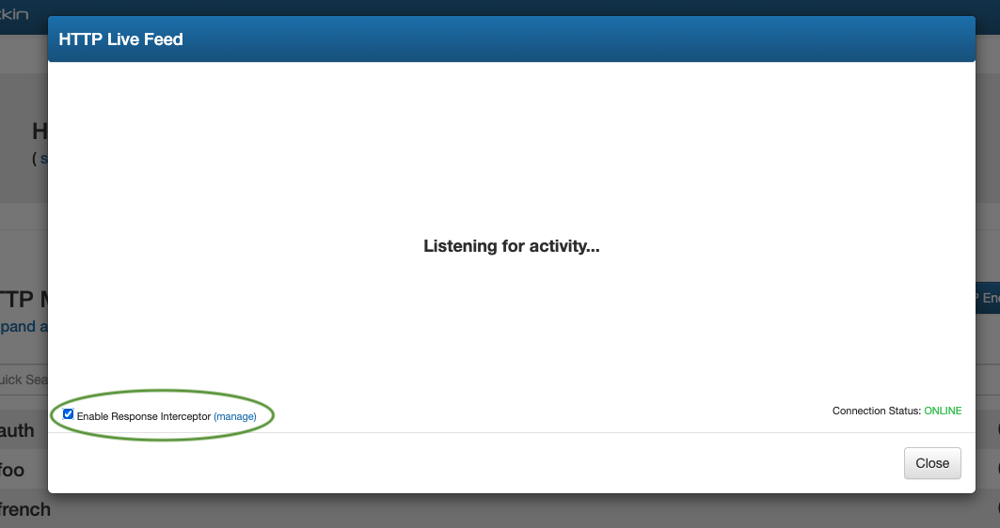
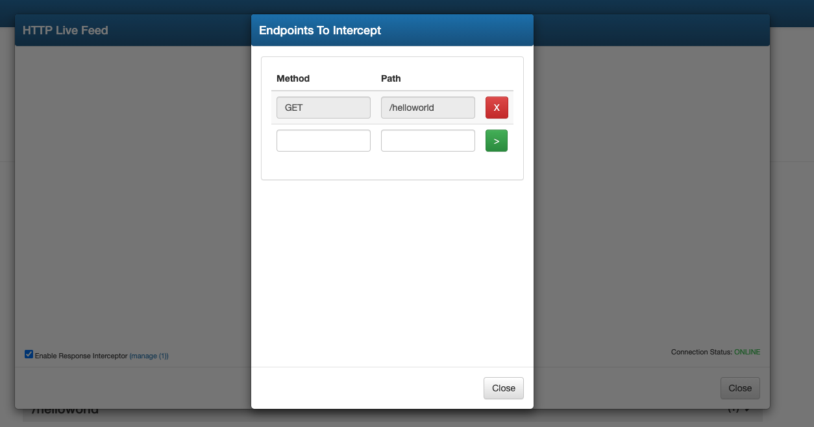
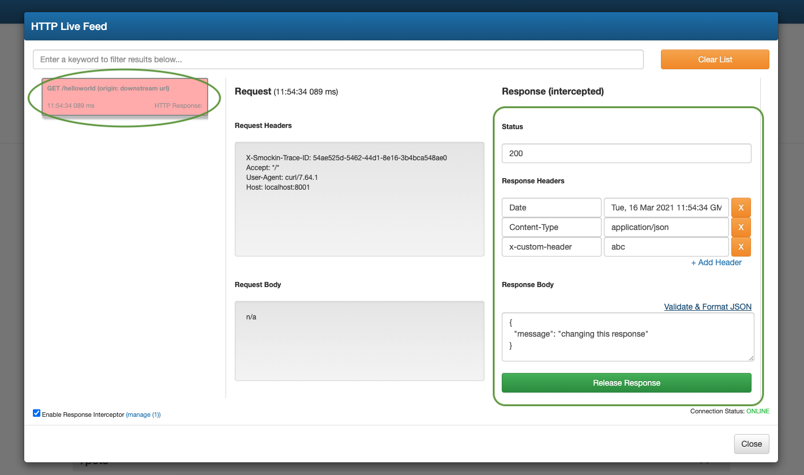
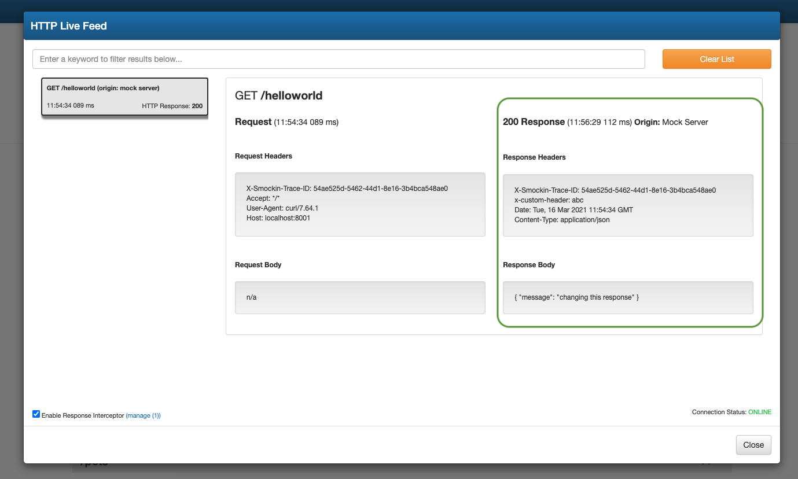
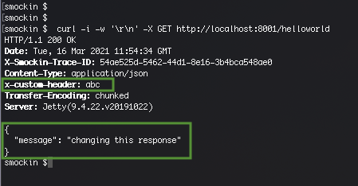

sMockin can be used to intercept and block any HTTP responses running through the mock or proxy server.
This can be particularly useful during development where you need to experiment with how different outcomes from an existing API endpoint impact a piece of logic your building. Simple use cases, could be where you need an existing endpoint to return a new field or want to see what happens to your mobile app when the endpoint returns an error 500.
To enable this feature, open the logging interface by selecting HTTP Live Feed from the Tools drop down menu.

From here tick the Enable Response Interceptor checkbox and then click on the manage link.

Next enter the details of the endpoint you wish to intercept (this could be a mock or geninue endpoint you are proxying through sMockin) and then click the green arrow button.
Once done close the Endpoints to Intercept list (note, that the manage link displays a count of many endpoints are setup to be intercepted).

Using a HTTP client (cURL, Postman, etc...), go ahead and make a call to your endpoint.
curl -i -X GET http://localhost:8001/helloworld
If successfully intercepted, the request should appear highlighted in red within the logging interface.
From here, click on the red entry to view the request and make any changes to the HTTP response status, body or headers using the editable fields (in this example I've change the response body and added an extra response header).
Once done simply click the Release Response button to allow the endpoint call to complete and return back to the caller.

The entry in the logging interface will no longer be editible and display the result of the final request and response.

The caller will have also received the amended response (note the amended body and extra response header).

You can amend the endpoints you need to intercept at any stage, by clicking on the manage link and revisting the Endpoints to Intercept list.
A final point worth noting, is that should you abruptly close the logging interface at any stage or even experience a browser crash, sMockin will automatically release any blocked requests and return the original response back to the caller. This is a deliberate safeguard to prevent any intercepted calls becoming indefinately locked.